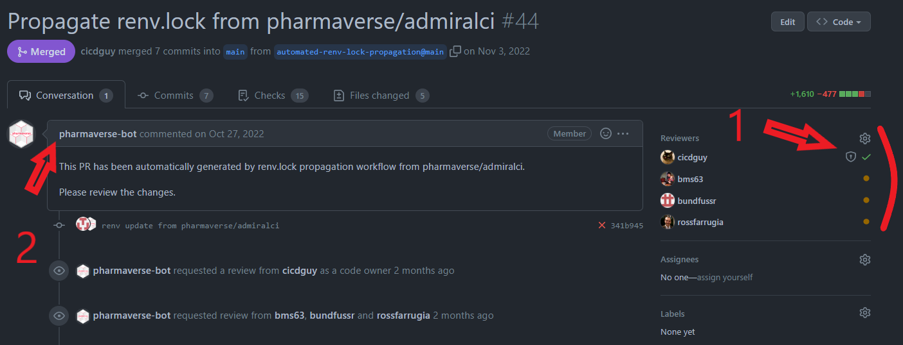

Introduction
This article will go over the following:
- The process for requesting an update to the Lock Files, i.e.
renv.lock, for the admiral family of packages. - How admiralci uses a propagation process to update
renv.lockfiles across the family of admiral packages.
Updates to Lock Files
The intention of the renv.lock file is to create a harmonized development environment across our many different companies and collaborators. The core team feels that if everyone is working with the same version of R and the same versions of R packages then communication around development issues will be much easier.
Unfortunately, this adoption of a renv.lock file also creates a few barriers for our development process. First, if we lock in a version of R and R packages then we can not quickly adopt the latest and greatest of updates from new releases. Second, how does a team decide to update a certain package or version of R and who gets to make that final call? Finally, when do we make updates to the lock file. Hopefully, the below will provide some guidance around these issues. Please note, these process might change over time and admiral developers are encouraged to stay up to date with the latest processes and participate in the discussion.
Note: Through GitHub Actions we continuously test admiral’s integration with the latest 3 snapshots of dependent R packages on CRAN that are closest in date to latest 3 versions of R. Please see GitHub Actions/Workflows on the admiraldev site for more information on this process.
R Package Updates and Lock Files
As you gathered, package updates to the renv.lock file are permissible and needed as our family grows and dependent packages and R versions change over time.
Most of the scenarios for updates can be slotted into the following:
- A new function in a dependent package, e.g. dplyr is available and could be utilized in a new admiral function.
- A new package is available with new functions that could greatly simplify our code base or add in additional functionality.
- A breaking bug is discovered in a dependent package that breaks backward compatibility for that package with admiral.
- A dependency is no longer used in admiral.
- A dependency package cause an issue in R checks or R-CMD checks to fail .
The first step for requesting an update for a R package in the renv.lock file is to raise it in our slack channel. The next step is to make an issue for it in the admiralci repository and tag admiral leads. This will create discussion around why this update is needed. The admiralci leads will then make the final decision (almost always in the affirmative) and we can move this to the attention of other admiral extension package leads. Once all leads are aware of this needed update, then the renv.lock file for the entire admiral family packages will be updated through a centrally controlled propagation processes. It is expected that all repositories adopt this update renv.lock file.
Propagation Process
Through GitHub Actions we have developed the ability to propagate updated lock files with our preferred versions of R and R packages throughout the family of admiral packages. This ensures that developers working on {admiral.test} and {admiralonco} have the same common environment as those working on admiraldev and {admiralvaccines}.
The file that does the propagation process is called renv.yml located in the .github/workflows folder of the admiralci repository.
The process is implemented to generate renv.lock file automatically. It will be done for all supported R releases that need to be compatible with admiral. The propagation occurs in the following steps:
- The modification of
r-renv-lock.ymltriggers regenerate the package dependencies that automatically commit changes forrenv.lock. - A Pull Request will be created in all admiral family repos as seen below with the tile Propagate renv.lock from pharmaverse/admiralci title.
- A
pharmaverse-botis the author of the Pull Request as seen in[2]in the image below.
- The bot assign relevant reviewers to the Pull Requests. The reviewers tend to be admins or core contributors to the repo and can be adjusted if needed.
Note: In [1] you will see that one reviewer has a special shield symbol next to their name. This person is a codeowner of the common.yml and is alerted whenever a change is made to this file. You can read more about codeowners on About Code Owners in GitHub Documentation

R Version Updates and Lock Files
Currently, the family of admiral packages operate 3 R versions back from the latest R version release. For example, if the latest release of R is 4.2, then our renv.lock files will use 4.0.5. We use 4.0.5 as this has the latest patches available for 4.0. We will use the propagation process to update the latest version of R when a new release becomes available.
It’s possible to use R version 4.1 and 4.2 with the renv profiles. The profiles are used to reproduce the development environment. Please notice that the profiles for R 4.1 and 4.2 using different cran snapshot. The snapshot is generated by discovering the packages used by admiral packages, with extra rules for missing dependencies. The script is defining minimum version or specific version of packages. For example, we can define roxygen2 version that is used across all other packages to generate documentation.
Note: Through GitHub Actions we continuously test admiral’s integration with the latest three version of R and closest snapshot of R packages to the R version release date. For example, while we use version 4.0.5 in development we are continuously testing R version 4.1 and 4.2 for compatibility with admiral.
Working with project profiles
The automate generation create the renv.lock file for all supported R version by admiral project. The use of profiles simplifies the testing process across all R environments.
To activate a particular profile, use:
renv::activate(profile = "4.1")The available profiles are:
- R 4.0_legacy - To reproduces the checks from R 4.0 CMD CHECK on GitHub CI.
- R 4.0 - Currently the default development profile.
- R 4.1 - Generated for R 4.1.
- R 4.2 - Generated for R 4.2.
You can read more about profiles in renv documentation.
Containers
Several admiral developers are looking into a container strategy to be utilized in a parallel with the renv.lock strategy.
We are keen on continuously evaluating this process as we balance our software development and stability needs. Please don’t hesitate to raise concerns or questions around this process, but at this point in time we have determined this is our best course to maintain a consistent development environment across multiple repository, companies and collaborations.